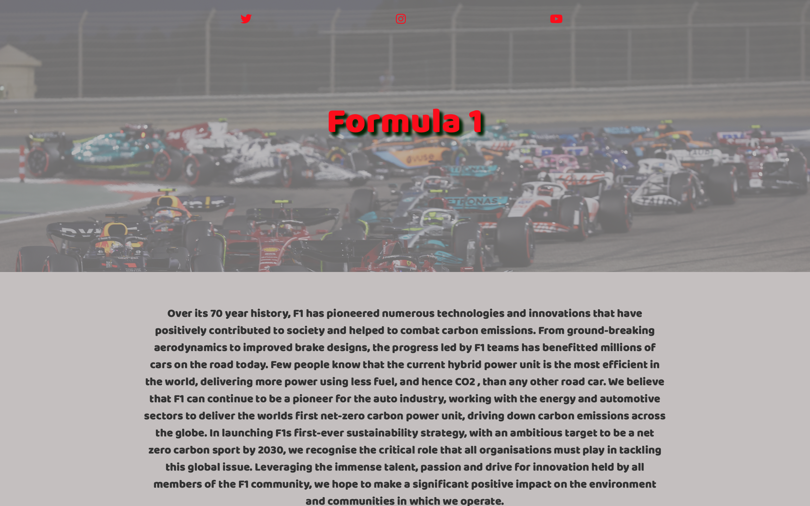
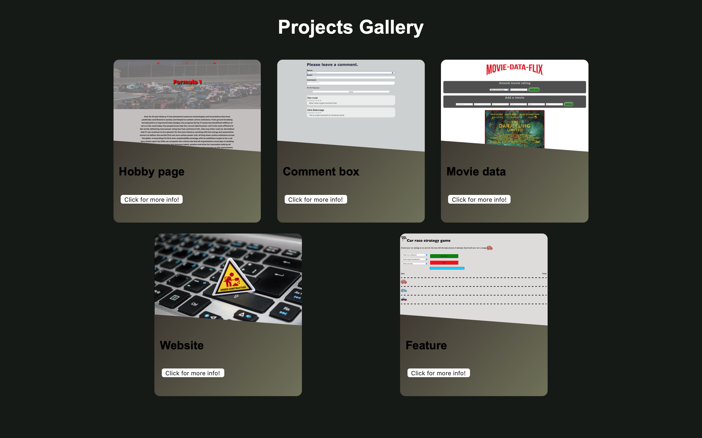
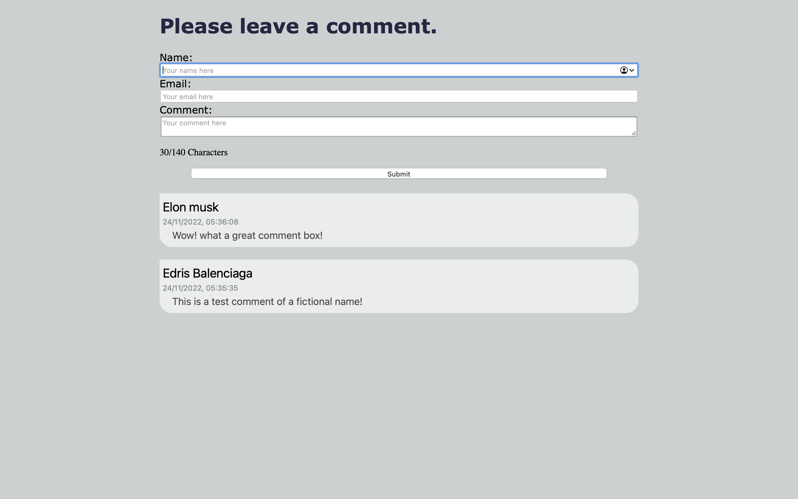
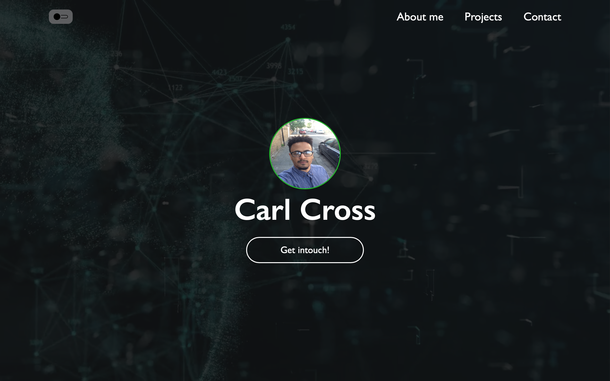

Projects
Here is a time line and overview of the projects i have been working on.






I come from a mechanical engineering background academically, but have worked mostly in
customer service roles.
I have gained a lot of knowledge and experience in this field, such as being able to
operate in challenging and fast paced environments and being able to communicate well with all walks of life.
I have been learning web development and working on my personal projects on and off for a few years now. I have really enjoyed the process so far
and gained a lot of valuable experience which I would like to develop further.
I have a passion for learning about technology and how to apply it to real world problems and have the aptitude and drive necessary to
take me further and extensively develop my technical skills amongst others.
I would like to get into web developement because this type of work brings me personal satisfaction. I have always liked the
idea of solving problems programmatically and dynamically. I think of coding as if I am solving a puzzle, it
forces me to think deeply and methodically, and also the pleasure I get once I have solved something makes it all
worth it in the end.
I have worked hard to develop skills that are relevant to this industry. Although I have only
scratched the surface, I understand that this industry is a journey of continuous learning and adaptation.
Working on the FAC projects was a very satisfying process for me because it solidified what I had already learned
previously, and also forced me to learn different ways of using javascript. An example of this would be the movie
data project, normally I would just use a for loop and add another nested for loop until I get the data I need.
But this was not a good implementation for the problem at hand and would not scale very well.
Completing the project gave me gratification because once it was working properly I had a visual and interactive
representation of what my hard work had resulted in.
I am applying for the FAC program because I believe I will learn, grow and develop whilst working alongside other
self motivated people. I can also bring my knowledge from my previous self study which I believe can add value to
others' learning.
I have read through the FAC website and I believe that I can help fulfill the diversity and inclusion objectives
amongst others.
Being of mixed heritage (English and Zimbabwean) and also moving to London at the age of 10, has played an
influential part in my development into the person I am today. This background has allowed me to appreciate the
differences and similarities of different cultures and societies.
Also, I have had many experiences growing up in east London and working mostly in customer services. These have
further exposed me to an abundance of cultures, personalities and sexualities.
I am grateful for my exposure to diversity and hope that I continue to grow and develop as a person and web developer at FAC.